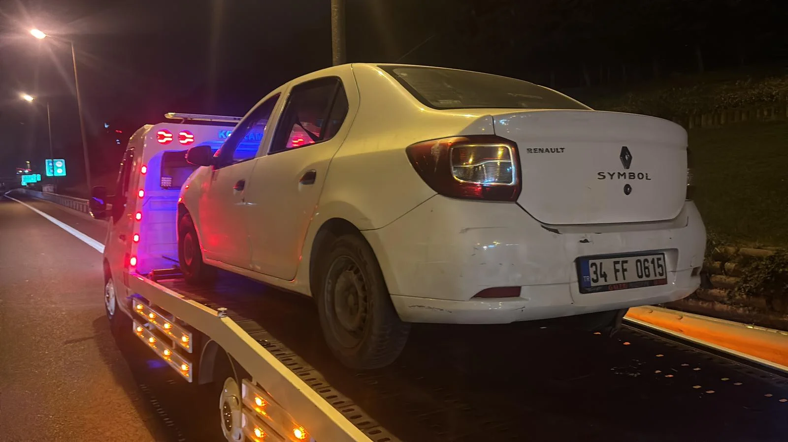
Kayar Kasa ÇekiciÜmraniye Kayar Kasa Binek Araç Çekici
Alçak açılı hidrolik platform sayesinde otomobillerin tampon sürtmesi olmadan kaskolu ve hasarsız yüklenmesi.
 7/24 Binek Çekici
7/24 Binek Çekici
Ataşehir Bulvarı Otomobil Nakliyesi
Motor arızası nedeniyle yolda kalan binek otomobilin güvenli şekilde en yakın servise transferi.
 Acil Yol Yardım
Acil Yol Yardım
Çayırova E-5 Otomobil Yol Yardım
Yoğun trafikte hızlı emniyet önlemleri alınarak arızalı aracın kayar platforma aktarılması.
 Şehirlerarası Transfer
Şehirlerarası Transfer
Şehirlerarası Otomobil Nakliyesi
İstanbul Anadolu yakasından Kocaeli ve çevre illere yetkili servis transfer operasyonu.
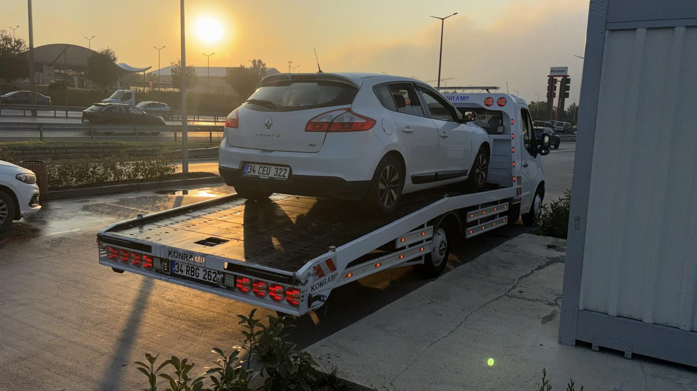
Gece Nöbetçi ÇekiciÜmraniye Marina Nöbetçi Çekici
Gece saatlerinde akü ve şanzıman sorunu yaşayan binek aracın yerinde tespiti ve güvenli nakli.
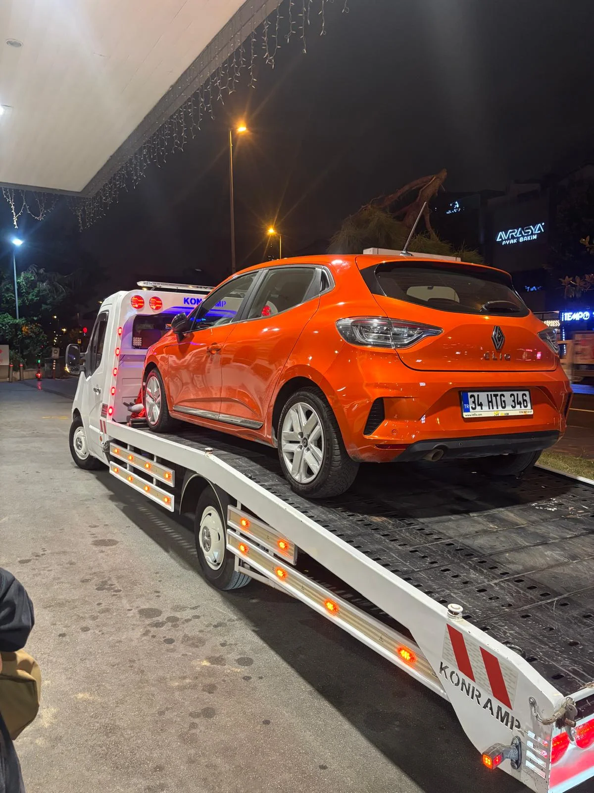
Hidrolik Vinçli KasaKurtköy Binek Araç ve Sedan Çekici
Lastik arızası ve mekanik kilitlenme yaşayan sedan aracın hasarsız hidrolik yüklenmesi.
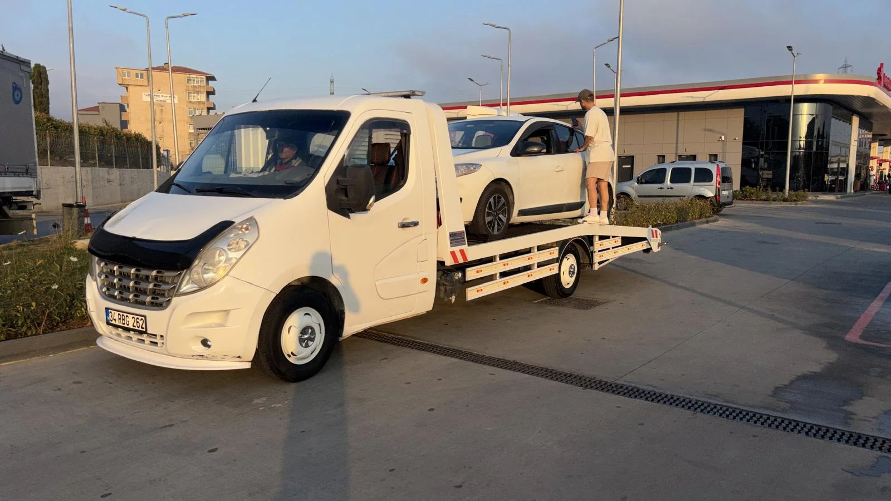
Kapsamlı TaşımaAydınlı Sanayi Bölgesi Araç Çekici
Sanayi siteleri bağlantısında yürümeyen araçların hidrolik çelik tamburla kasaya çekilmesi.
 VIP & Lüks Taşıma
VIP & Lüks Taşıma
Lüks Segment Otomobil Güvenli Nakliyesi
Düşük zemin açılı özel rampa ve yumuşak jant sabitleyicilerle jant ve tampon korumalı taşıma.
 Spor Otomobil Nakli
Spor Otomobil Nakli
Modifiyeli & Alçak Spor Araç Çekici
Yere yakın gövdeye sahip spor araçların tampon ve karter sürtmesi olmadan yüklenmesi.
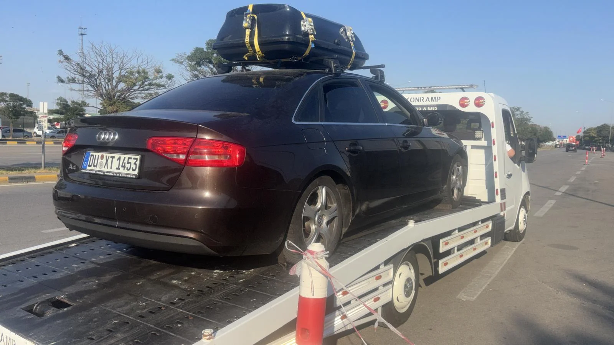
Premium ÇekiciPremium Otomobil Kaskolu Özel Transfer
Özel kaskolu taşıyıcı sorumluluk sigortası ile yüksek değerli araçların güvenle taşınması.
Kapalı Otopark & VIP
Lüks Coupe & Cabrio Araç Transferi
Otomatik vitesli lüks otomobillerin yürüyen aksamına yük binmeden aparatlı aktarımı.
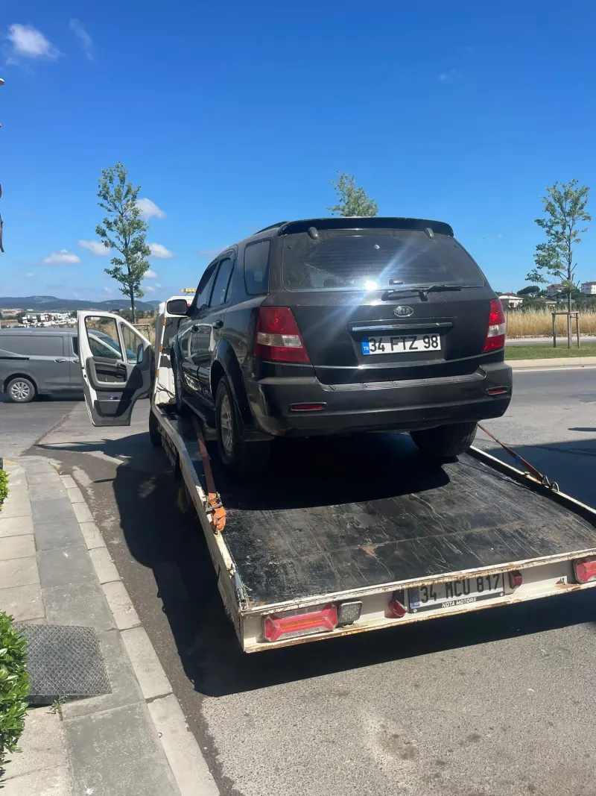
4x4 & SUV Kurtarma4x4 ve Ağır SUV Araç Çekici
Dört çeker ve diferansiyel kilitli SUV araçların şanzımanına zarar vermeden kasaya alınması.
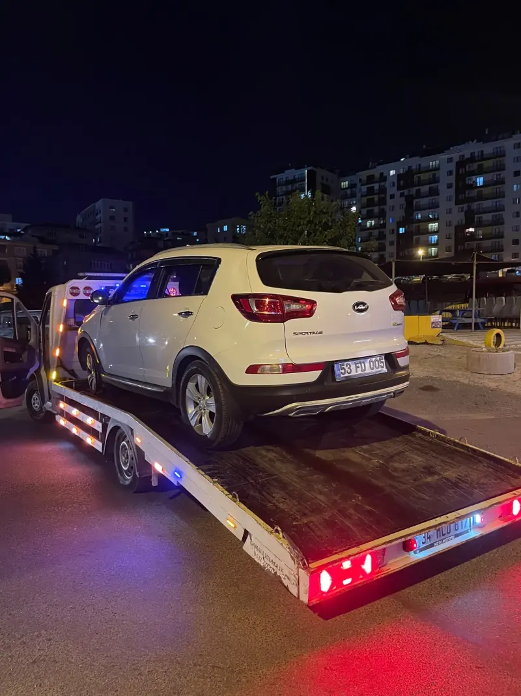
Ağır SUV TaşımaBüyük Boy Aile SUV ve Pikap Çekici
2.5 ton üzeri SUV ve arazi taşıtlarının güçlendirilmiş hidrolik platformumuzla emniyetli nakli.
Eğimli Zemine Saplanan SUV Kurtarma
Yoldan kayan 4x4 arazi araçlarının hidrolik bomlu vinç ile çekilerek düz zemine çıkarılması.
Elektrikli SUV ve Hibrit Araç Nakliyesi
Elektrik motorlu yeni nesil SUV araçların tekerlekten dönme olmadan güvenli ve kaskolu nakliyesi.
 Motosiklet Çekici
Motosiklet Çekici
Özel Sehpa Sistemli Motosiklet Nakliyesi
Ön tekeri kilitleyen çelik sehpa ve 4 noktalı gergi kemerleriyle devrilme riski sıfır taşıma.
 Racing & Touring
Racing & Touring
Touring ve Racing Motor Yol Yardım
Yüksek hacimli motosikletlerin grenaj ve süspansiyonuna zarar vermeden kaskolu taşınması.
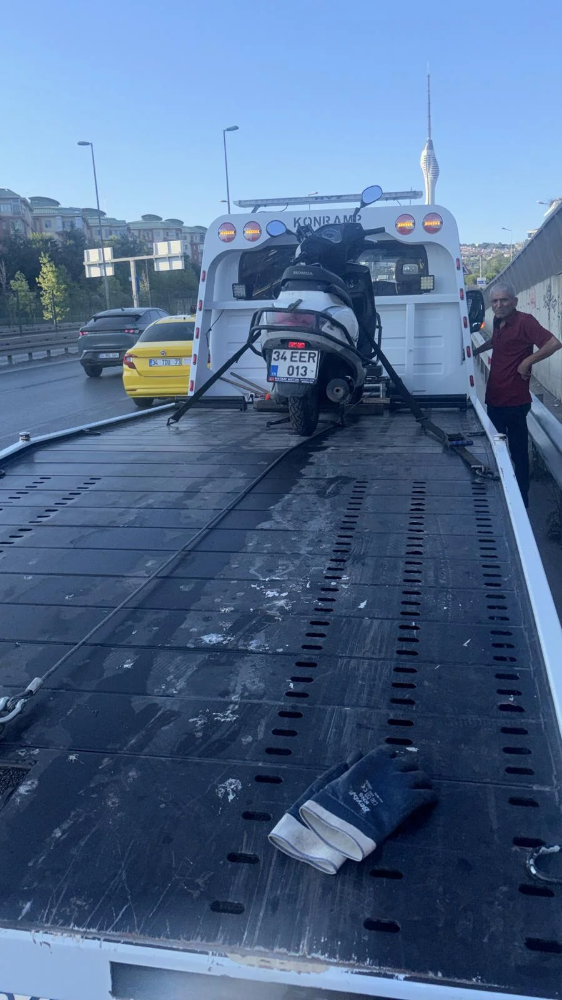
Scooter & KuryeMaxi Scooter ve Kurye Motor Çekici
Şehir trafiğinde lastiği patlayan veya kayışı kopan scooter motorların servise ulaştırılması.
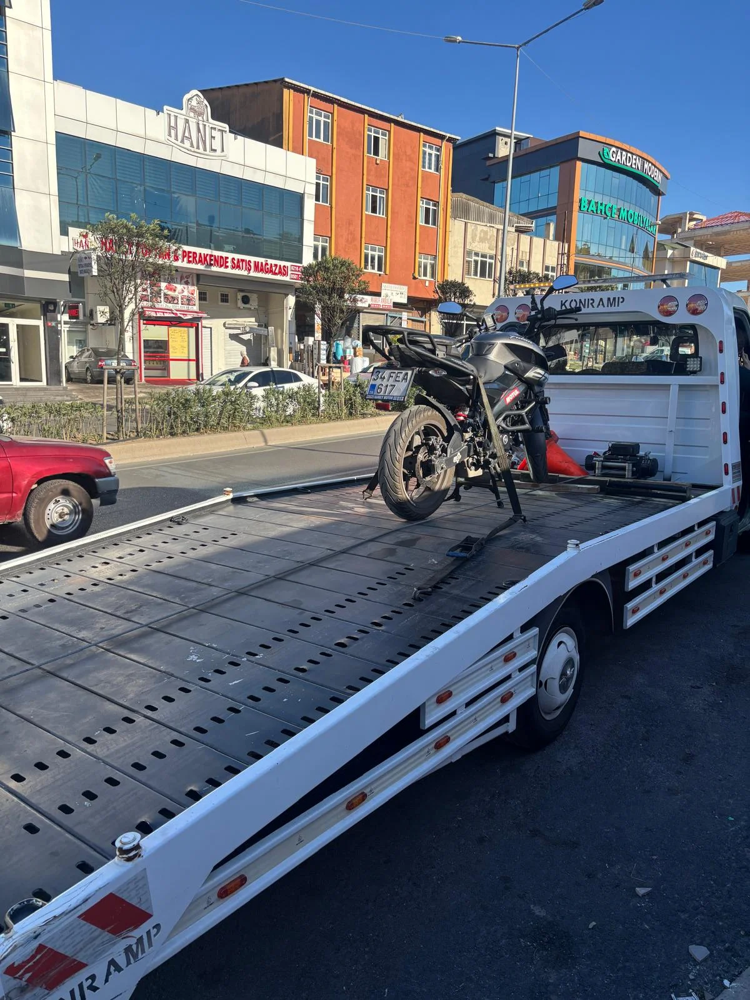
Chopper & CruiserAğır Chopper ve Özel Motor Taşıma
Geniş gidon ve alçak şaseli özel motosikletlerin dengeli platformda sıfır sarsıntıyla nakli.
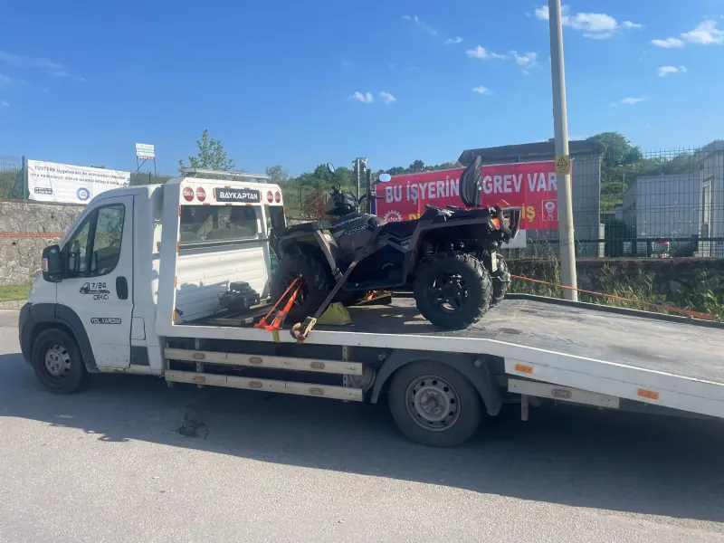
ATV & UTV TaşımaATV ve UTV Arazi Taşıtı Çekici
Geniş tekerlekli ATV ve hobi araçlarının kayar kasa platforma güvenle sabitlenerek nakli.
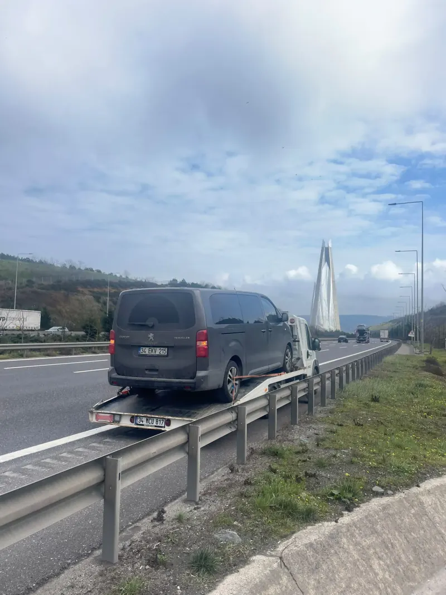
Hafif Ticari ÇekiciMinibüs & Panelvan Hafif Ticari Çekici
Uzun şasi ve yüksek tavanlı ticari araçların güçlendirilmiş kayar kasamızla taşınması.
 Lojistik & Filo
Lojistik & Filo
Kargo ve Dağıtım Araçları Yol Yardım
Teslimat saatlerini aksatmamak adına kurye ve lojistik araçlarına yerinde acil çekici desteği.
 Servis Transferi
Servis Transferi
Ticari Filo Araçları Servis Nakliyesi
Şirket ve esnaf araçlarının yetkili veya özel tamirhaneye güvenle intikali.
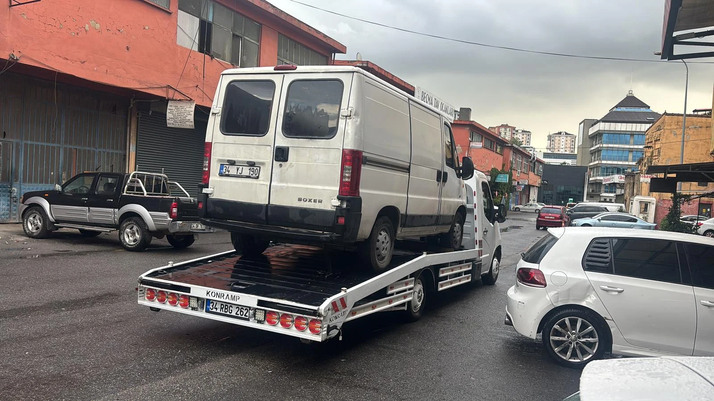
Uzun Şasi KasaUzun Şasi Kamyonet ve Minibüs Çekici
6.5 metrelik özel kayar kasa ile ekstra uzun ticari araçların dingil aşımı olmadan yüklenmesi.
 Şehirlerarası Ticari
Şehirlerarası Ticari
Şehirlerarası Hafif Ticari Transferi
Ümraniye ve İstanbul genelinde arıza yapan hafif ticari araçların garantili ve sabit fiyatlı nakliyesi.
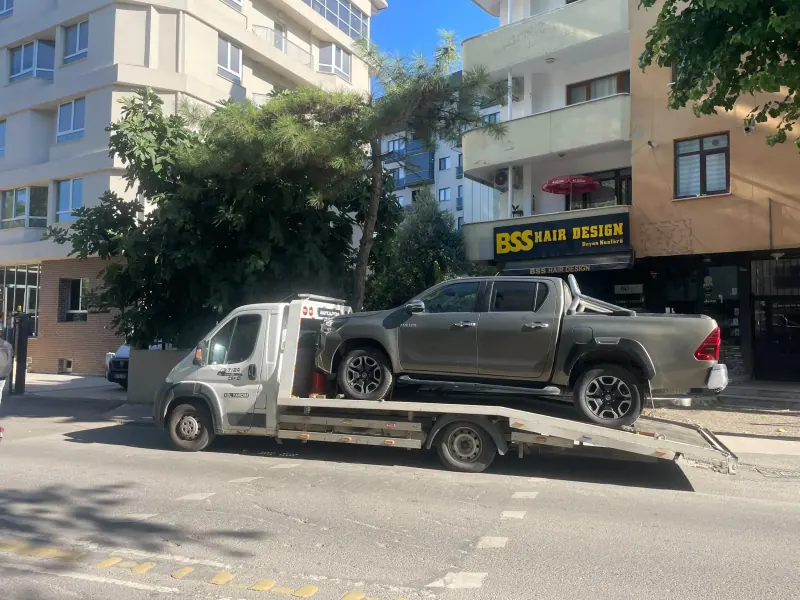
Kamyonet KurtarmaOrhanlı Kamyonet Taşıyıcı Çekici
Üzerinde hafif yük bulunan ticari kamyonetlerin devrilme riski olmadan kasaya alınması.
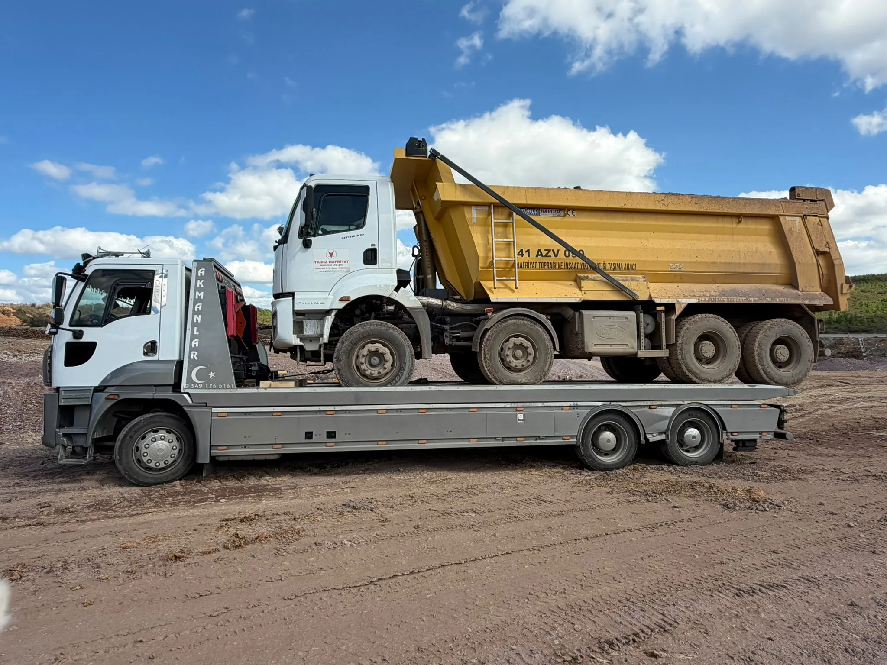
Çift Teker KamyonetÇift Tekerli Kamyonet Çekimi
Geniş iz aralıklı çift tekerlekli kamyonetlerin dengeli hidrolik platform ile taşınması.
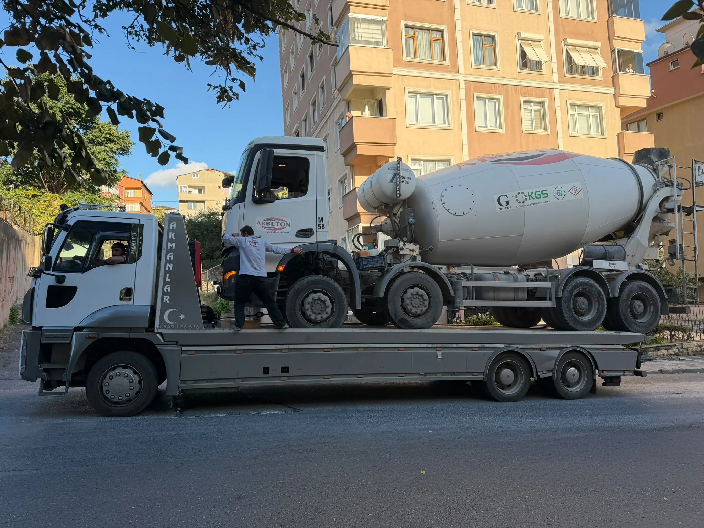
Arıza & KazaSanayi Bağlantılı Kamyonet Çekici
Şanzıman ve diferansiyel problemi yaşayan ticari araçların tekerlek aparatıyla taşınması.
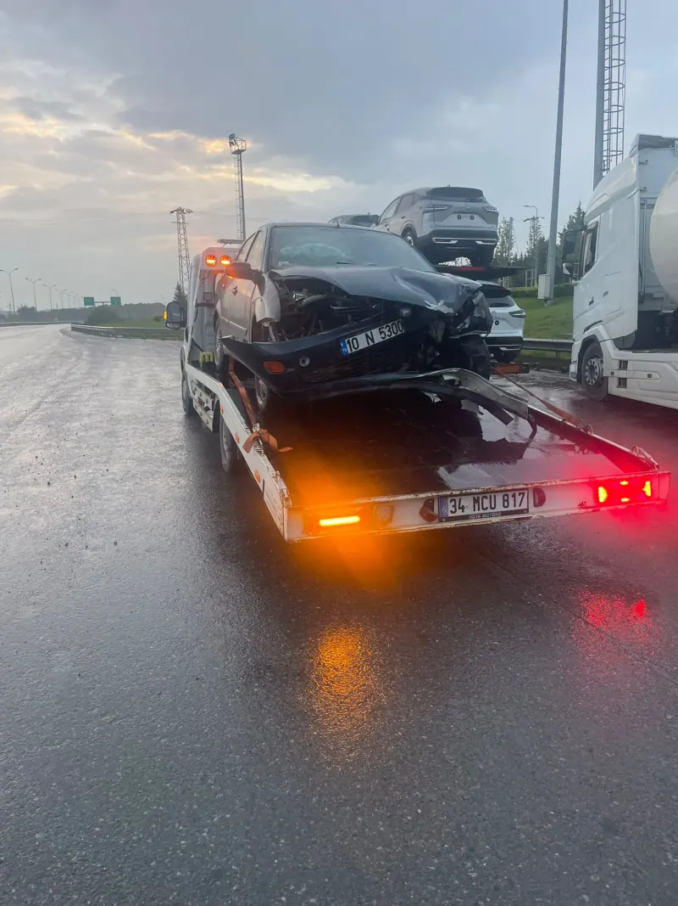
Kaza & OtoyolOtoyol Hasarlı Araç Kurtarma
Trafik akışını aksatmadan, flaşör ve reflektör emniyet çemberi altında hasarlı araç yükleme.
 Vinç & Şarampol
Vinç & Şarampol
Bariyer ve Yoldan Çıkan Araç Kurtarma
Yürür aksamı hasar görmüş araçların hidrolik vinç yardımıyla hasarsız düzeltilip kasaya alınması.
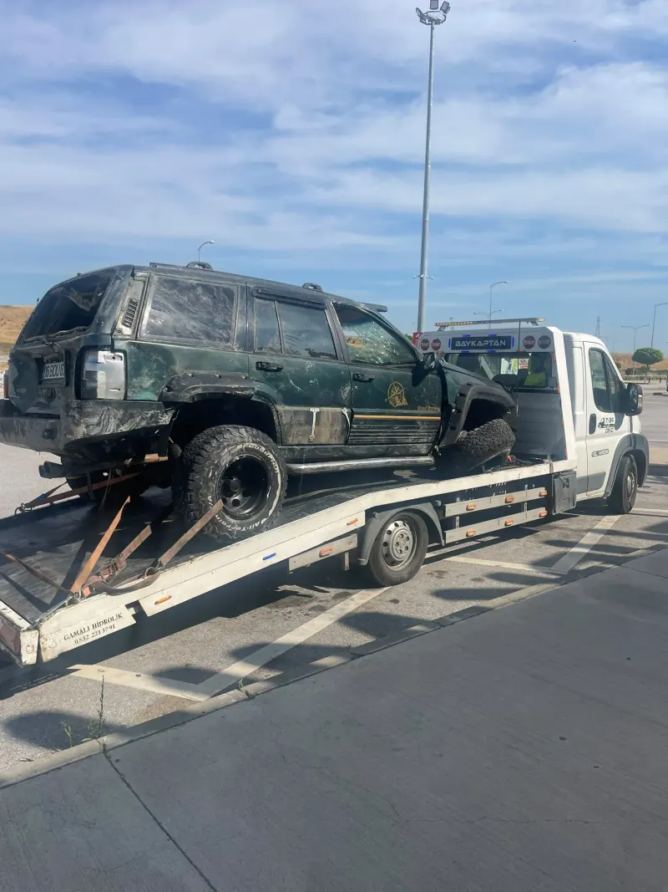
Kilitli Teker AparatıTekerleği Kilitli Kazalı Araç Çekimi
Kaza sebebiyle dingili kırılmış araçlara kızaklı taşıma aparatı takılarak sıfır temas nakil.
 E-5 Acil Müdahale
E-5 Acil Müdahale
D-100 E-5 Acil Çekici Müdahalesi
E-5 ana arterinde emniyet şeridinde kalan araçlara en kısa sürede ulaşarak trafiği rahatlatma.
 Sabiha Gökçen
Sabiha Gökçen
Sabiha Gökçen Havalimanı Çekici
Havalimanı açık/kapalı otoparkları ve bağlantı yollarında aküsü biten veya arızalanan araçlara intikal.
 Karavan Taşıma
Karavan Taşıma
Motokaravan ve Karavan Nakliyesi
Karavan severlerin araçlarını seyahat öncesi veya arıza anında hasarsız nakletme çözümü.
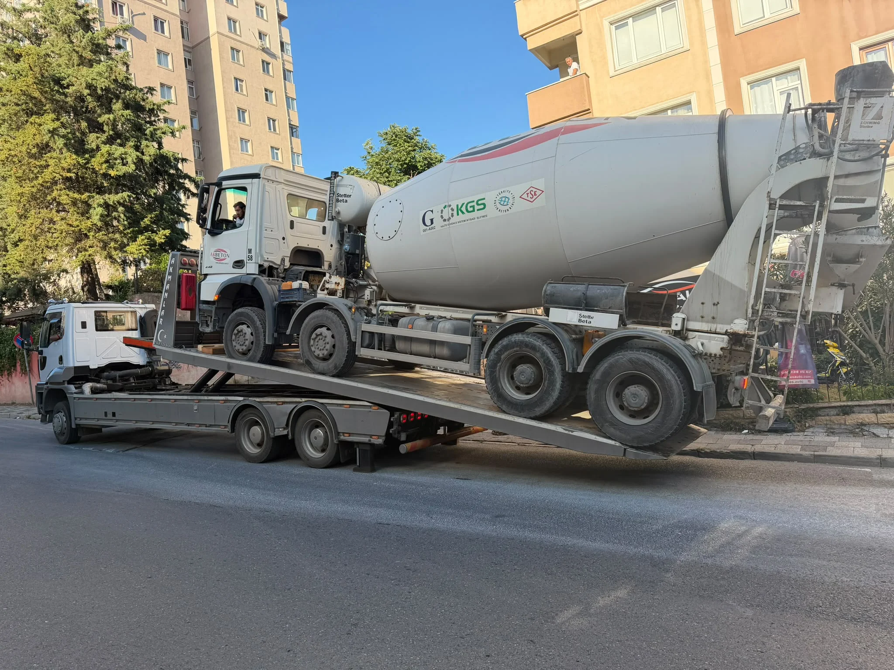
İş Makinesi & ForkliftForklift ve İş Makinesi Nakliyesi
Tersaneler ve şantiye alanlarında forklift ve kompakt iş makinelerinin iş yerine transferi.
 Özel Donanım Çekici
Özel Donanım Çekici
Özel Donanım Kurtarma Operasyonu
Kapalı otopark, dar sokak ve engelli arazilerde son teknoloji teçhizatla çözüm odaklı operasyon.
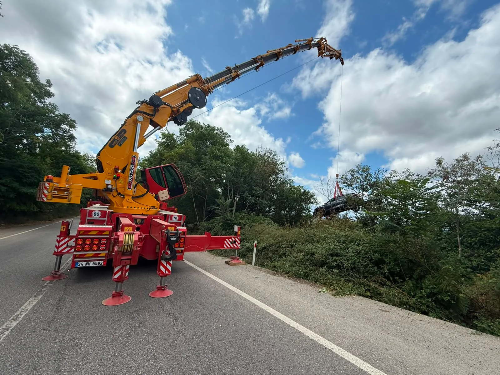
Ahtapot VinçAhtapot Vinçli Araç Kurtarma
Şanzımanı kilitli veya aksı kırık araçların tekerlek aparatlı vinç sistemi ile sıfır temasla kasaya alınması.